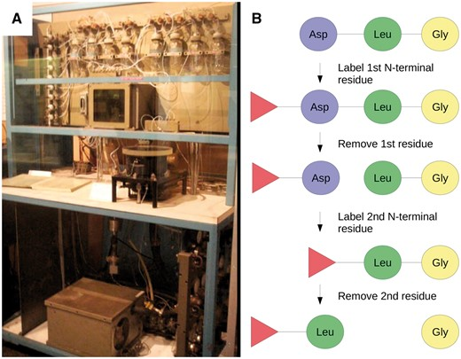
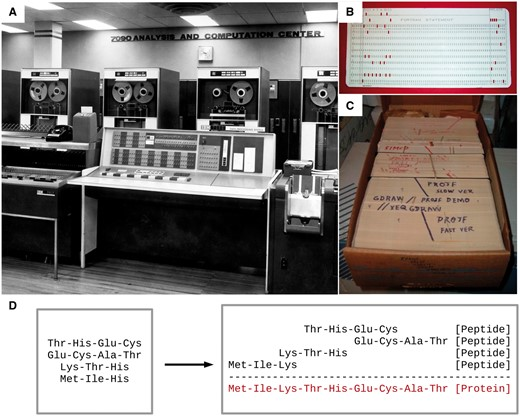

1950–1970: As origens
No início da década de 1950, pouco se sabia sobre o ácido desoxirribonucléico (DNA). Seu status como molécula transportadora da informação genética ainda era controverso naquela época. Avery, MacLeod e McCarty (1944) mostraram que a absorção de DNA puro de uma cepa bacteriana virulenta poderia conferir virulência a uma cepa não virulenta, mas seus resultados não foram imediatamente aceitos pela comunidade científica. Muitos pensavam que as proteínas eram as portadoras da informação genética. O papel do DNA como uma molécula codificadora de informação genética foi validado em 1952 por Hershey e Chase quando provaram, além de qualquer dúvida razoável, que era o DNA, e não a proteína, que era captado e transmitido por células bacterianas infectadas por um bacteriófago.
Apesar do conhecimento do seu papel principal, pouco se sabia sobre o arranjo da molécula de DNA. Tudo o que sabíamos era que os pares de seus monômeros (ou seja, nucleotídeos) estavam em proporções equimolares. Em outras palavras, existe tanta adenosina quanto timidina, e existe tanta guanidina quanto citidina. Foi em 1953 que a estrutura de dupla hélice do DNA foi finalmente resolvida por Watson, Crick e Franklin. Apesar deste avanço, levaria mais 13 anos antes de decifrar o código genético e mais 25 anos antes que os primeiros métodos de sequenciamento de DNA estivessem disponíveis. Consequentemente, o uso da bioinformática na análise de DNA ficou quase duas décadas atrás da análise de proteínas, cuja natureza química já era melhor compreendida do que o DNA.
A análise de proteínas foi o ponto de partida
No final da década de 1950, além de grandes avanços na determinação de estruturas proteicas através da cristalografia, foi publicada a primeira sequência (ou seja, arranjo da cadeia de aminoácidos) de uma proteína, a insulina. Este grande salto resolveu o debate sobre o arranjo da cadeia polipeptídica das proteínas. Além disso, incentivou o desenvolvimento de métodos mais eficientes para obtenção de sequências proteicas. O método de degradação de Edman surgiu como um método simples que permitia o sequenciamento de proteínas, um aminoácido por vez, começando no terminal N. Juntamente com a automação ( Figura 1 ), mais de 15 famílias de proteínas diferentes foram sequenciadas nos 10 anos seguintes.

Figura 1 - Sequenciamento automatizado de peptídeos de Edman.
Dayhoff: o primeiro bioinformático
Margaret Dayhoff (1925–1983) foi uma físico-química americana pioneira na aplicação de métodos computacionais ao campo da bioquímica. A contribuição de Dayhoff para este campo é tão importante que David J. Lipman, ex-diretor do Centro Nacional de Informações sobre Biotecnologia (NCBI), a chamou de 'a mãe e o pai da bioinformática'.
Dayhoff usou extensivamente métodos computacionais para sua tese de doutorado em eletroquímica e viu o potencial dos computadores nas áreas de biologia e medicina. Em 1960, tornou-se Diretora Associada da National Biomedical Resource Foundation. Lá, ela começou a trabalhar com Robert S. Ledley, um físico que também buscava trazer recursos computacionais para problemas biomédicos. De 1958 a 1962, ambos combinaram seus conhecimentos e desenvolveram o COMPROTEIN, 'um programa de computador completo para o IBM 7090' projetado para determinar a estrutura primária da proteína usando dados de sequenciamento de peptídeos de Edman. Este software, inteiramente codificado em FORTRAN em cartões perfurados, é a primeira ocorrência do que chamaríamos hoje de montador de sequência de novo ( Figura 2 ).

Figura 2 - Máquina de sequência de novo.
1970–1980: Mudança de paradigma da análise de proteínas para análise de DNA
As especificações de qualquer ser vivo (mais precisamente, suas “proteínas”) estão codificadas nos arranjos específicos de nucleotídeos da molécula de DNA. Esta visão foi formalizada na hipótese da sequência de Francis Crick (também chamada hoje de 'Dogma Central'), na qual ele postulou que as sequências de RNA, transcritas do DNA, determinam a sequência de aminoácidos das proteínas que codificam. Por sua vez, a sequência de aminoácidos determina a estrutura tridimensional da proteína.
Portanto, se pudéssemos descobrir como a célula traduz a “linguagem do DNA” em sequências polipeptídicas, poderíamos prever a estrutura primária de qualquer proteína produzida por um organismo através da “leitura do seu DNA”. Em 1968, todos os 64 códons do código genético foram decifrados; O ADN era agora “legível” e esta conquista inovadora exigia formas simples e acessíveis de obter sequências de ADN.
Bioinformática e o movimento do software livre
Em 1985, Richard Stallman publicou o Manifesto GNU, que delineou sua motivação para criar um sistema operacional gratuito baseado em Unix chamado GNU (GNU's Not Unix). Este movimento cresceu mais tarde como a Free Software Foundation, que promove a filosofia de que 'os usuários têm a liberdade de executar, copiar, distribuir, estudar, alterar e melhorar o software'. A filosofia de software livre promovida por Stallman estava no centro de várias iniciativas em bioinformática, como o European Molecular Biology Open Software Suite, cujo desenvolvimento começou no final de 1996 como uma alternativa gratuita e de código aberto ao GCG. Na verdade, esta linha de pensamento já era notável em iniciativas anteriores anteriores ao projeto GNU. Tal exemplo é o Projeto Computacional Colaborativo Número 4 (CCP4) para cristalografia macromolecular de raios X, que foi iniciado em 1979 e ainda comumente usado hoje.
Mais importante ainda, foi durante este período que as bases de dados de sequências do Laboratório Europeu de Biologia Molecular (EMBL), GenBank e DNA Data Bank of Japan (DDBJ) se uniram (EMBL e GenBank em 1986 e finalmente DDBJ em 1987) para, entre outras coisas, , para padronizar a formatação de dados, para definir informações mínimas para relatar sequências de nucleotídeos e para facilitar o compartilhamento de dados entre esses bancos de dados. Hoje essa união ainda existe e agora é representada pela International Nucleotide Sequence Database Collaboration ( //www.insdc.org/ )
A década de 1980 também foi o momento em que a bioinformática se tornou presente o suficiente na ciência moderna para ter uma revista dedicada. Efetivamente, dada a crescente disponibilidade de computadores e o enorme potencial de realização de análises assistidas por computador em áreas biológicas, foi criada em 1985 uma revista especializada em bioinformática, Computer Applications in the Biosciences ( CABIOS ) .
O uso de computadores em biologia se ampliou com o movimento do software livre e o surgimento de revistas científicas dedicadas. No entanto, para grandes conjuntos de dados, como genomas inteiros e catálogos de genes, foram utilizados computadores mainframe de pequena escala em vez de microcomputadores. Esses sistemas normalmente rodavam em sistemas operacionais do tipo Unix e usavam linguagens de programação diferentes (por exemplo, C e FORTRAN) daquelas normalmente usadas em microcomputadores (como BASIC e Pascal). Como resultado, softwares populares de análise de sequência feitos para microcomputadores nem sempre eram compatíveis com computadores mainframe e vice-versa.